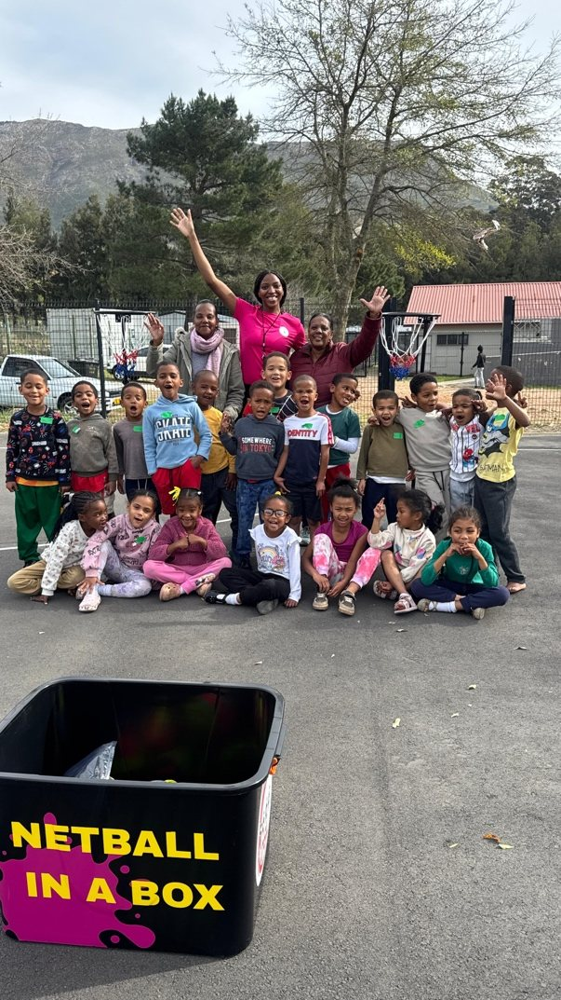
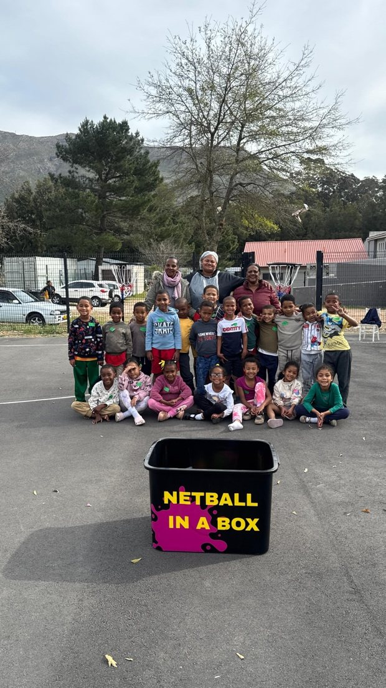

On 20 August 2026, Netball in a Box travelled to Kylemore in the Winelands to visit Aitsa After Care Centre. This was a solo outreach for me, and it turned out to be one of the most personal visits yet.
Nestled by the mountains, Kylemore is a small, tight-knit community full of lovely people. I was welcomed warmly by Teacher Rozanne and Manager Deidre, who introduced me to a Grade R class that was eager to get started. We made our way to the outside courts at the front of the school and set up our stations for the day.
The first session was a great introduction to the basic skills of netball, and the learners embraced it with so much enthusiasm that we extended the session. Everything we needed for the next activity was already in the box, so I set up a relay-style race for the learners. Two teams competed against each other, and each learner had to complete a course before tagging in their partner. The course involved sprinting, jumping over obstacles, changing direction in a zig-zag and, finally, shooting a ball into the hoop. We built the whole course from cones, bibs, balls and poles from the box. It was a great reminder that you don't need a full netball court to give children a fun, active introduction to the game.
Beyond the games, what I will remember most is the people. I had brilliant conversations with Rozanne and Deidre, who told me more about their community and about their own journeys. Visits like this are a reminder that this programme is about more than sport. It's also about building connections with the people who care for these children every day.
We left the Netball in a Box with Aitsa After Care Centre so that Rozanne, Deidre and the learners can keep playing long after the visit.


For more information, contact:
Dr. Freda Kemp, Director
Email: fkemp64@gmail.com
Phone: 082 523 0785